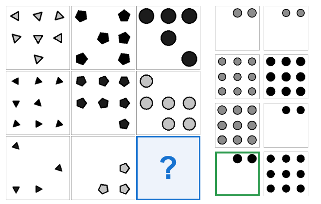

Raven's Progressive Matrices (RPM) is a classic test of abstract reasoning. Each puzzle is a 3×3 grid of panels with the last panel missing. Every row follows the same hidden rules (for example, the number of objects increases, the shape stays fixed, or the colour changes in order), and the model must pick the missing panel from eight candidates.

Supervised methods train on which candidate is correct. We use far less: during training the model sees only the eight given panels of each puzzle, with no answer labels, no rule or attribute labels and no candidates. Candidates appear only at test time. This is a stricter setting than prior label-free methods, which still use the candidates during training.
The model, RSM, closes most of the gap to supervised training: it comes within 1.1 points of the same network trained with answer labels. Method details will be released with the paper.
| Method | Labels | I-RAVEN | RAVEN-FAIR |
|---|---|---|---|
| PredRNet, same network (our run) | answer | 95.4 | – |
| SSPredRNet (TPAMI 25) | none | 62.3 | – |
| SSLvMB (Sci. Adv. 26) | none | 89.7 ± 2.7 | 91.3 ± 2.4 |
| RSM (ours) | none | 94.3 ± 0.5 | 97.7 ± 0.3 |
Test accuracy (%), mean over 3 runs. RSM uses the same network as the supervised PredRNet row.